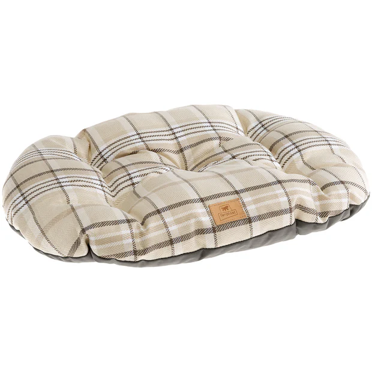
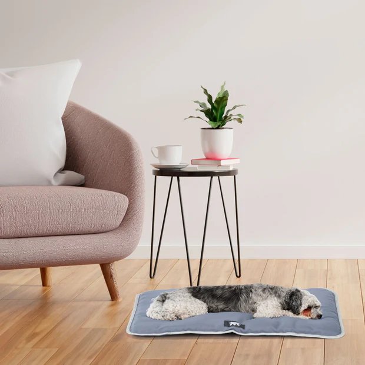
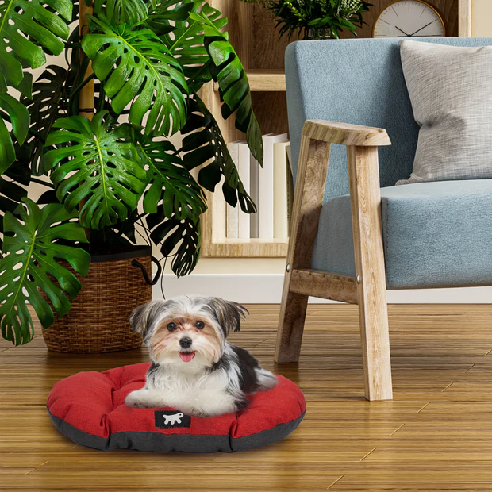
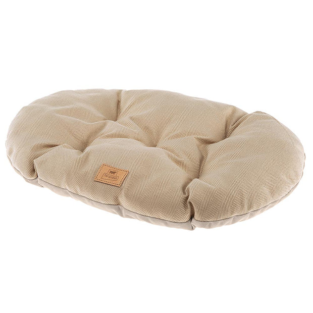
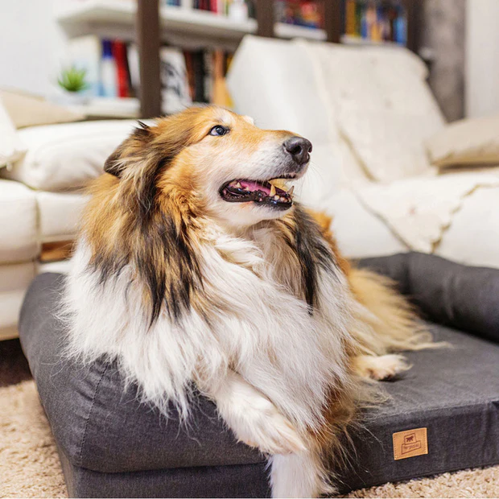

|  |
Scott |
20€ |
Cojín para perros y gatos.
Doble cara en fantasía escocesa y terciopelo.
Acolchado interno.
Lavable a 30°C.
Varios tamaños disponibles.
|
|  |
Jolly |
25€ |
Materiales de alta tecnología.
Tela hidrófuga resistente.
Ideal para coche o casetas exteriores.
Lavable a 30°C.
Diferentes tamaños disponibles.
|
|  |
Relax Colour |
11,95€ |
Algodón con doble cara.
Acolchado suave.
Lavable a 30°C.
Seis tamaños disponibles.
|
|  |
Stuart |
16€ |
Doble cara: tejido resistente y terciopelo.
Acolchado interno.
Ideal para invierno.
Lavable a 30°C.
|
|  |
MEMOR-ONE |
125€ |
Sofá con Memory Foam.
Reposabrazos acolchados.
Funda lavable.
Ideal para perros mayores.
Disponible en M, L y XL.
|